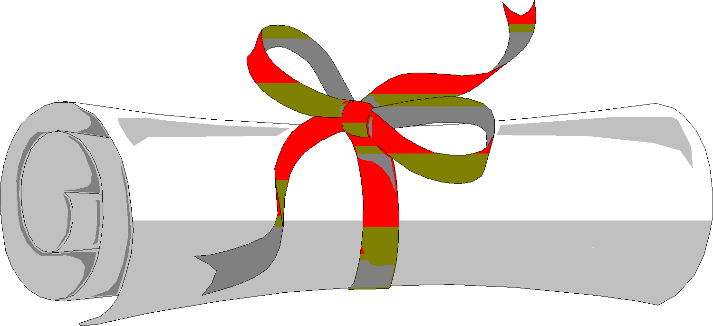

 GIPO III Competition Version. GIPO III won the IKEPS competition in the class of general Knowledge Engineering Tools for AI Planning at ICAPS 2005. For details see link below.
Introduction
GIPO (Graphical Interface for Planning with Objects) is an experimental
GUI and tools environment for building planning domain models. Versions I and II were written
by Ron Simpson, Weihong Zhao and Donghong Liu who provided the planning engines.
GIPO was developed at the Univ of Huddersfield as one output
of the PLANFORM.
project from the Univ of Huddersfield, UK, with partners at the Univ of
Salford and Univ of Durham.
The PLANFORM project is now complete but GIPO continues to be developed by Ron Simpson
at the University of Huddersfield. The project has no external funding consequently
development continues on a when time permits basis.
June 2005 GIPO-III (GIPO version 3) won the IKEPS competition in the class of general Knowledge Engineering Tools for AI Planning.
see ICAPS05 Home for competition details.
Rationale
- Planning Domain Models are hard to design, write, debug, maintain
- even for experts. The process of encoding is laborious. Bugs are of various
types and can lurk in models for a long time. Presently, many domain model
authors use only planning engines to try to develop and debug a domain model.
Planners have not generally been designed for this purpose.
- A notation that is good for encoding and validation may not be good
for use with a particular class of planners. There is a need for translators
from the encoding language to the input language for a target planner. Further,
with an increase in the number of useful tools and techniques surrounding
planning, there is a need to integrate these into a tools environment.
- As planners and planning applications become larger, the problems of
engineering planning domain models become more acute. There is a need to
research into engineering environments and explore their synergy with general
purpose planners.
Basic Functions of GIPO Version 3
GIPO Version 3 allows a user to create new domain models or import and
change old ones. Domains are characterised as being either classical
or hierarchical or requiring Durative Actions. The tool set presented to the user is automatically selected
to fit this characterisation. All domain types are
supported by tools having similar functionality.
They feature:
- Syntax and semantic checks for individual components of a domain
model
- Semantic cross checking between components
- Graphical construction of domain operators
- Export/import facilities for PDDL models (classical domains only)
- An open PDDL port for plugging in third party planning systems (classical
domains only)
- A planner stepper for debugging operators
- A plan animator / solution checker (not yet for Durative Actions)
- A random task generator (classical domains only)
- User manuals and a help tutorial
GIPO-III (GIPO version 3)
builds on previous releases by adding a major new editor for classical domains. The new editor allows domains to be defined in terms of state machines which are used to define the life histories of the domain's dynamic object classes. The new editor
helps rationalise design decisions at a higher level of abstraction and makes better use of the object metaphor that underpins the object centric approach of GIPO. The editor also supports a library mechanism by which commonly re-occurring segments of domains may be stored in a library and then customised for re-used in other domain definitions. The fastest way to get an overview of the life history editor is to check out the early sections of the supporting tutorial. With the introduction of version 3 GIPO has experimental
support for domains requiring durative actions and numeric fluents, with roughly the expressive
power of PDDL level 5.
GIPO-II
(GIPO Version 2) built on the previous release by adding support for Hierarchical
planning Domains. In particular:
- It supports defining state at the appropriate level of generality and
the inheritance of state.
- It supports the definition of operators to change object state at any
level of generality required.
- It allows the definition of compound operators (mini canned plans) to
perform common tasks.
- It allows the definition of tasks at any appropriate level of generality.
- It has many semantic test it applies to the defined domain to help prevent
error.
- It has a manual stepper for constructing plans and dynamically testing
domain definitions.
- It is integrated with HyHtn a hierarchical planner.
- It has an animator to graphically view the output of HyHtn.
- It incorporates all the features of the previous versions of GIPO including
"Opmaker" - an operator induction method. Sample results from Opmaker runs
are available on the Resources page.